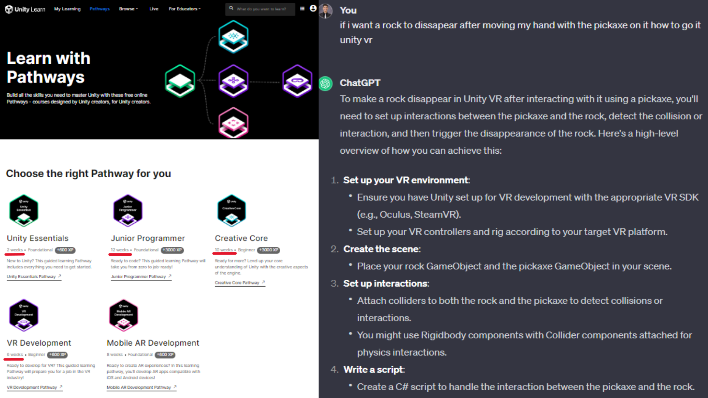

The idea is to develop a virtual reality crime scene application for
criminal justice students.
Bring the university experience closer to reality to prepare for
post-university life.
Exploit the potential of Digital U and Meta Quest 2.
This led me to the idea of developing a virtual reality application
for my final project.
Photo: Digital U at CMU | Central Methodist University.
(n.d.).
Centralmethodist.edu.
Retrieved February 8, 2024, from
https://centralmethodist.edu/academics/digitalu/index.html
Unity
Unity is a cross-platform game engine developed by Unity Technologies.
It's particularly renowned for its capabilities in iOS and Android
mobile game
development.
Unity is favored by beginner developers due to its user-friendly
interface.
Key Features:
Supports the creation of both 3D and 2D games.
Facilitates the development of interactive simulations and various
experiences.
Wikipedia Contributors. (2019, October 12). Unity (game
engine). Wikipedia;
Wikimedia Foundation.
https://en.wikipedia.org/wiki/Unity_(game_engine)

Challenges
Compatibility issues.
No experience with Unity.
Unity Learn Pathway takes approximately 30 weeks (7 months) to complete.
Winter vacation time was used to learn about this (1 month).
Game developed in 1 month.
Use of Artificial Intelligence (AI) for some specific issues.
Learn game development w/ Unity | Courses & tutorials in
game design, VR, AR, & Real-time 3D. (n.d.). Unity Learn.
https://learn.unity.com/pathways